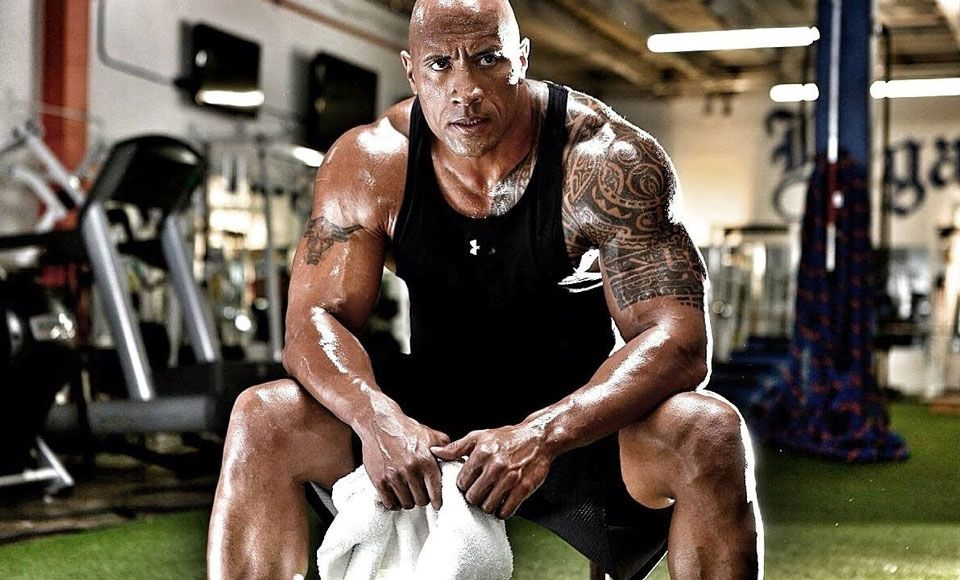

" Empower youself to make the changes you need to make "

Despcription for Best Gym
Gym – Space, Design, and Layout
To perform well, a gym has to be designed with a lot of thought and care – the facility has to be spacious,
well structured, and properly organized to be able to accommodate a lot of user
Quality Gym Flooring
A good gym must have a good floor.
Quality flooring is key for a safe, attractive,
and high-performing sports facility – it must provide users with the
right conditions for practicing their favorite sport and make them feel
comfortable and welcome in the gym. The floor has to be resilient enough
for weightlifting and aerobic exercises, must provide superb shock absorption
and cushioning to ensure the safety of the athletes, and needs to have
excellent resistance to heavy impact load (so it can withstand thousands
of pounds of fitness equipment).
State-Of-The-Art Equipment
After the right training environment (safe, high-performing,
comfortable, and motivating), the next most important thing for a
good gym is the right equipment. There needs to be a wide variety of
fitness machines and exercise accessories (so that the gym attracts users
of various interests and abilities) and enough of the “popular” machines (like treadmills),
so there is no need for time limits on specific equipment
Motivation and Accountability
Community and Socializing
With social distancing and stay-at-home orders, many people are feeling more isolated and lonelier.
Mental health is a huge topic right now and creating an environment that nurtures human
connection is hugely attractive.
Many of the most successful fitness brands have a thriving community of like-minded individuals.
They encourage members to socialize and continue to develop their fitness community both online and offline.
Clean and Hygienic
Cleanliness and hygiene have always been important factors when it comes to investing in a gym membership or visiting a
fitness facility. But now, cleanliness is a major consumer priority.There is a new awareness of how germs
spread and anxiousness surrounding high touchpoints and close proximity to other people.
Your facility needs to be disinfected, cleaned and sanitized regularly in order to meet consumer expectations.
It’s a good idea to share your COVID-19 cleaning protocols with members
to reassure your community that it’s safe to exercise
Training Ability
The training abilities you cater to will play a part in who joins your gym. If you focus on high
performance and improving personal bests in a specific area, an entry-level gym-goer isn’t
going to sign up. While it’s important to niche down,
having options for various training abilities is useful when creating a welcoming and accessible environment.
Training results in an increase in the efficiency of O2 transport within the body.
By lowering the resting heart rate (HR), and the HR at sub maximal loads, the heart pumps
more blood with every heart beat. This, in addition to other physiological changes,
increases the oxygen extraction capability.
Tips to make your first back-to-gym workout visit a success
Remember gym etiquette
Even if you’ve been to the same gym in the past,
make sure you read their most up-to-date policy so you don’t get any surprises when you arrive.
Respect other gym-goers and wipe down the equipment with disinfectant wipes after use,
and use a towel. You should also return equipment to the
racks once you’ve used them.
How to avoid injury
Warming up before your workout is so important. A good warm-up prepares you for the challenge you’re about to take on,
physically and mentally — you can find the Sweat trainers’ recommended warm-up routine before each of their workouts in the Sweat app.
During your workout, start by using lighter weights and fewer reps, or plan extra
rest time between sets. If you’re following one of the Sweat programs, try the recommended
routine first, and always pay attention to how your body feels — it is okay to stick to
the basics and focus on your technique, even if other people are doing more advanced exercises around you.
Assess your recovery
After your first workout at the gym, monitor how your body feels over the next couple of days.
Post-workout soreness, or delayed-onset muscle soreness, can emerge 24-48 hours after
your workout and is a normal occurrence when you boost the frequency or intensity of your workouts or try a new training style.
You don’t need to stop working out if you experience DOMS,
but you can speed up your recovery by resting, stretching or foam rolling or other active recovery ideas which is also provided
in the book Anatomy of Excercise:A Trainer's Inside Guide to Your Workout.
Thanks
Jaime Lanister, Manchester, The Grim North, UK
16th June 2022>